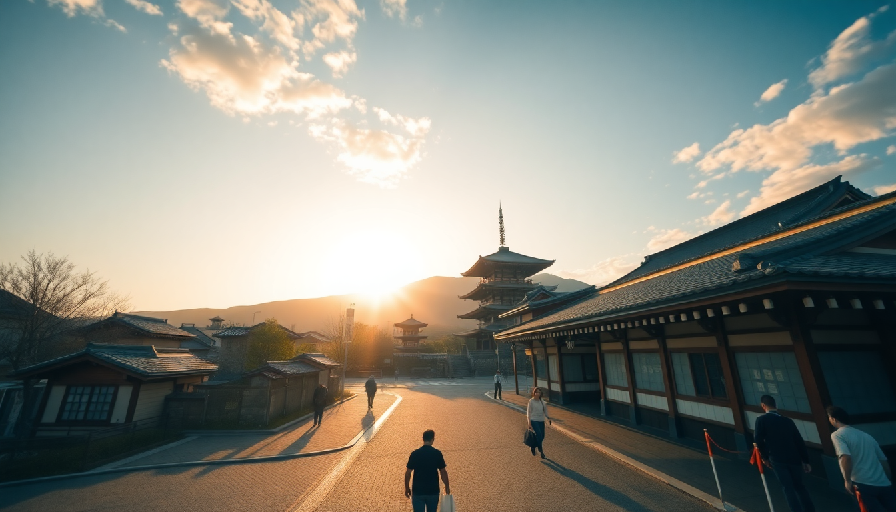

Best Time to Visit Japan: A Month-by-Month Guide

I’ve been to Japan three times now, and each trip felt like a completely different country depending on the month. The cherry blossoms in April are magical, but you’ll be shoulder-to-shoulder in Kyoto. January is crisp and empty, but half the temples close early. This guide breaks down exactly what you’ll get each month in Tokyo, Kyoto, and Osaka — so you can pick the timing that fits your priorities, not just the Instagram feed.
When is the best overall time to visit Japan?
The short answer is late March to early April for cherry blossoms, or late October to late November for autumn leaves. Both windows offer mild weather and stunning natural displays. But “best” depends on what you want.
In April, Tokyo’s Shinjuku Gyoen park is packed with hanami parties under the sakura. Kyoto’s Philosopher’s Path is gorgeous but crowded. I waited 45 minutes for a photo at Kinkaku-ji during peak bloom. If you hate crowds, skip April.
November is my personal favorite. The colors at Tofuku-ji Temple in Kyoto are fiery red and orange, and the air is crisp without being cold. Osaka’s Minoo Park waterfall hike is a quiet alternative to the city chaos. Crowds are moderate, and hotel prices in Shinjuku are about 20% lower than in April.
What is Japan like in winter (December to February)?
Winter is cold but underrated. The crowds thin out, and you get a quieter, more local Japan.
- December: Tokyo’s Roppongi Hills puts on a massive Christmas light show. Kyoto’s Kiyomizu-dera has a special winter illumination that feels almost private. I walked through Ninenzaka slope with maybe ten other people at dusk.
- January: New Year’s is a big deal. Temples like Meiji Jingu in Tokyo host hatsumode (first shrine visit). It’s packed on Jan 1–3, but after that, the city empties. I stayed at Hotel Gracery Shinjuku (the Godzilla hotel) for ¥8,000 a night — half the spring rate.
- February: The Sapporo Snow Festival is famous, but if you’re in Tokyo, head to Kawagoe for a day trip — the old warehouse district looks magical in snow. Osaka’s Dotonbori is still buzzing but without the summer humidity.
Downside: many temples and gardens close by 4:30 PM. And Kinkaku-ji is gorgeous in snow, but the walkways get icy.
How bad is the rainy season (June to July)?
Pretty bad, but manageable if you plan around it. The rainy season (tsuyu) runs from early June to mid-July. It’s not constant downpours — think drizzly mornings and humid afternoons.
- June: I made the mistake of visiting Fushimi Inari in June. The steps were slick, and the mist killed the view from the top. Stick to indoor spots like teamLab Borderless in Tokyo or Osaka Aquarium Kaiyukan.
- July: The rain eases, but humidity spikes. Gion Matsuri in Kyoto is a highlight — the massive floats and street food stalls are worth the sweat. I recommend Hotel Mume in Kyoto’s Higashiyama district, a tiny ryokan with air conditioning that saved me after a day in the heat.
If you’re flexible, skip June entirely. July is okay if you embrace the festivals and stay hydrated.
What about summer heat and typhoons (August to September)?
August is brutal. I’m not exaggerating — Tokyo hit 38°C (100°F) with 80% humidity when I was there. You’ll sweat through your shirt in the first ten minutes outside.
- August: Avoid outdoor temples like Kiyomizu-dera before 5 PM. Stick to air-conditioned spots: Pokémon Center Mega Tokyo in Ikebukuro, or Osaka’s Namba Parks shopping mall. The Obon Festival in mid-August means many locals travel, so trains and hotels are oddly empty in cities.
- September: Typhoon season peaks. I was stuck in Osaka Station for three hours when Typhoon Jebi hit. Flights get canceled, and Shinkansen trains sometimes stop. But the upside: September is the cheapest month to fly into Narita Airport. I got a ¥15,000 round-trip from LAX once.
If you can handle heat and risk, September is a budget goldmine. Otherwise, wait until October.
When is the best time for cherry blossoms in Tokyo, Kyoto, and Osaka?
Cherry blossom (sakura) season is the most popular time to visit. But it’s short and unpredictable.
- Tokyo: Full bloom usually hits the last week of March. Ueno Park is the classic spot, but it’s a zoo. I prefer Nakameguro — the canal lined with cherry trees is stunning, and the cafes along the water are less crowded.
- Kyoto: Maruyama Park has a massive weeping cherry tree that’s lit up at night. But the crowds are insane. I waited 20 minutes just to get into the park entrance. Arashiyama’s bamboo grove is also packed, but the cherry trees along the river are worth it.
- Osaka: Osaka Castle Park is spacious enough to avoid the worst crowds. I sat on a bench there for an hour eating takoyaki and watching petals fall. Kema Sakuranomiya Park along the Okawa River is my hidden gem — locals only, and you can rent a bike.
Book hotels six months in advance. I stayed at The Millennials Kyoto, a capsule hotel near Kawaramachi Station, and it was fully booked by February for April dates.
How is autumn foliage season (October to November)?
Autumn is my favorite season in Japan. The weather is perfect — 15–20°C (60–70°F) — and the colors are intense.
- October: Early colors start in the mountains. Nikko National Park (two hours from Tokyo) is stunning in mid-October. Kyoto’s Eikando Temple opens its evening illuminations in late October. I went on a weekday and had the garden almost to myself.
- November: Peak colors hit Kyoto and Tokyo around mid-November. Kiyomizu-dera’s hillside is a sea of red and orange. Osaka’s Minoo Park is a 30-minute train ride from Umeda — the waterfall framed by autumn leaves is worth the hike. I ate maple-leaf tempura (momiji tempura) from a street stall there.
Pro tip: avoid Arashiyama in November. The bamboo grove is crowded, and the main street is a tourist gauntlet. Instead, go to Tofuku-ji — the Tsutenkyo Bridge gives you a panoramic view of the valley without the shuffle.
FAQ
Should I visit Japan during Golden Week? No, unless you love crowds. Golden Week (late April to early May) is a national holiday cluster. Trains are packed, hotels triple in price, and attractions like Tokyo DisneySea and Universal Studios Japan in Osaka sell out weeks in advance. I made the mistake once — never again.
Is it worth visiting Japan in December for Christmas? Yes, but don’t expect a Western Christmas. Japan celebrates Christmas as a romantic couples’ holiday. Tokyo’s Marunouchi district has beautiful illuminations, and Osaka’s Umeda Sky Building puts on a light show. But December 25 is a normal workday — no closures. If you want a quieter trip, this is a solid window.
What is the cheapest month to fly to Japan? September, hands down. Typhoon season scares off tourists, so flights from the US and Europe drop sharply. I booked a ¥12,000 round-trip from San Francisco to Narita in mid-September. Just pack a rain jacket and check the typhoon forecast before you go.
Conclusion
- For cherry blossoms: Late March to early April. Book everything six months ahead. Nakameguro in Tokyo and Kema Sakuranomiya in Osaka are my favorite spots.
- For autumn leaves: Late October to late November. Tofuku-ji in Kyoto and Minoo Park in Osaka are quieter than the famous spots.
- For budget travelers: September offers the cheapest flights and hotels. Embrace the rain and typhoon risk.
- For avoiding crowds: January (after New Year’s) and February. Temples close early, but you’ll have them to yourself.
- For festivals: July’s Gion Matsuri in Kyoto and August’s Obon in Tokyo are unique cultural experiences, but expect heat and humidity.